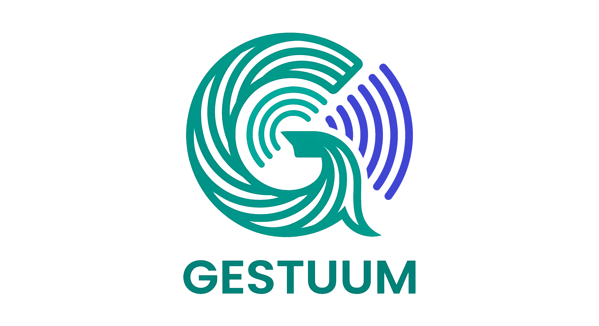

Vamos configurar seu GESTUUM em poucos minutos. Tudo acontece aqui no navegador, sem complicação nenhuma.
Antes de começar, separe:
Qual dispositivo está conectado?
Olhe para o dispositivo que está com você agora e escolha abaixo.
Escolha a voz que mais combina
Essa é a voz que o GESTUUM vai usar para falar com você. Pode mudar depois, sem problema.
Conecte e configure
Conecte o dispositivo ao computador usando o cabo USB-C.
Quando estiver conectado, clique no botão abaixo.
Tudo certo! Seu dispositivo está pronto.